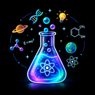

One column, no sidebar. Every “what next?” choice sits near the question box. Glass is only on controls (toolbar, dock); content scrolls beneath.

The question box and ideas start in the centre. Tapping an idea asks it at once (long-press = edit first). On the first question the box glides to the bottom — the motion teaches where questions go.
Bees can see ultraviolet light, which our eyes can’t. Many flowers have ultraviolet patterns, like landing strips, that point bees straight to the nectar. To us the petals look plain yellow, but to a bee they glow with arrows and stripes!
Only the latest step is open; earlier steps fold to their question, a 2-line preview, and the follow-up the child chose (↳). Dive deeper is attached to the answer. Try something new starts a new trail; ✎ Ask your own opens a new trail with an empty box. Typing in the box continues this trail (“Ask more about this…”).
A battery stores energy in chemicals. When you switch the toy on, the chemicals push tiny particles called electrons along the wires. That flow of electrons is electricity, and it spins the toy’s motor or lights its bulb.
Each trail is one topic and becomes one History entry later — so there is no separate “New chat” button. Until History exists, the replaced trail can be brought back with Undo for a few seconds.